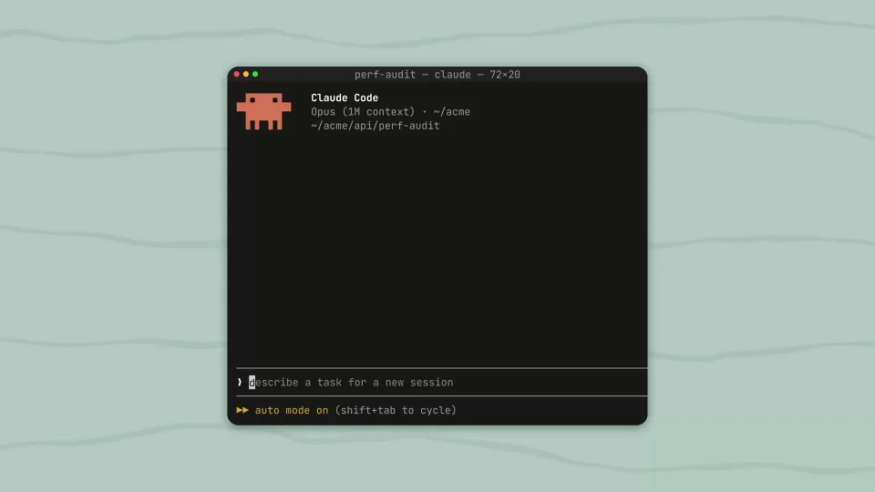
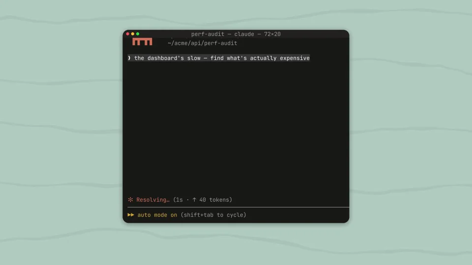
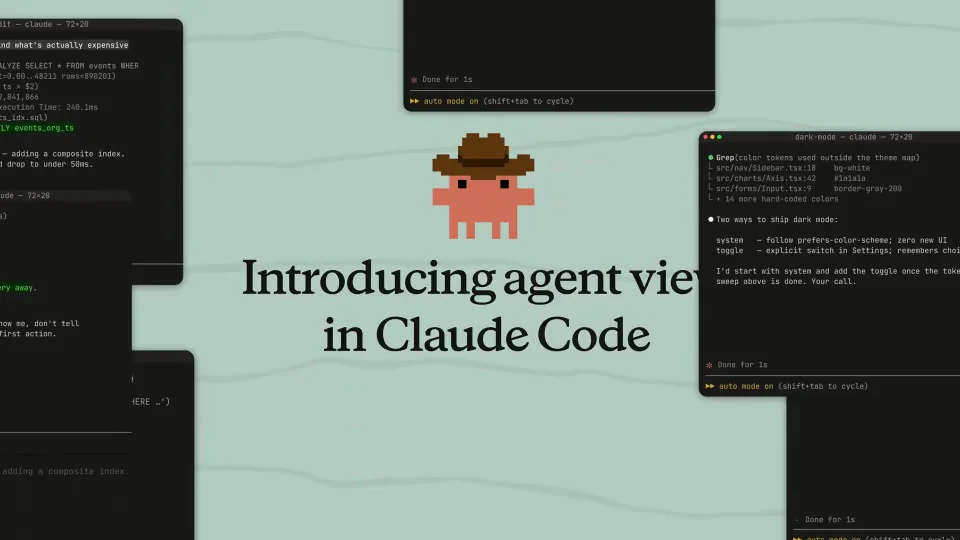
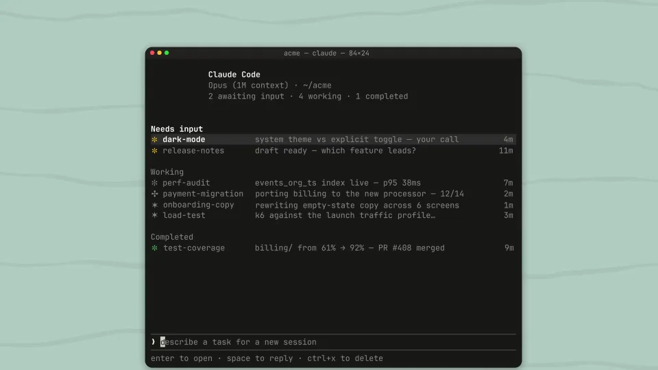
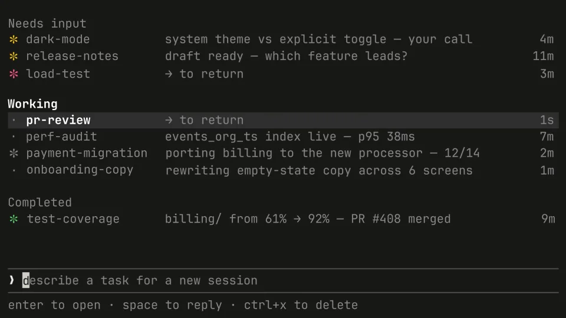
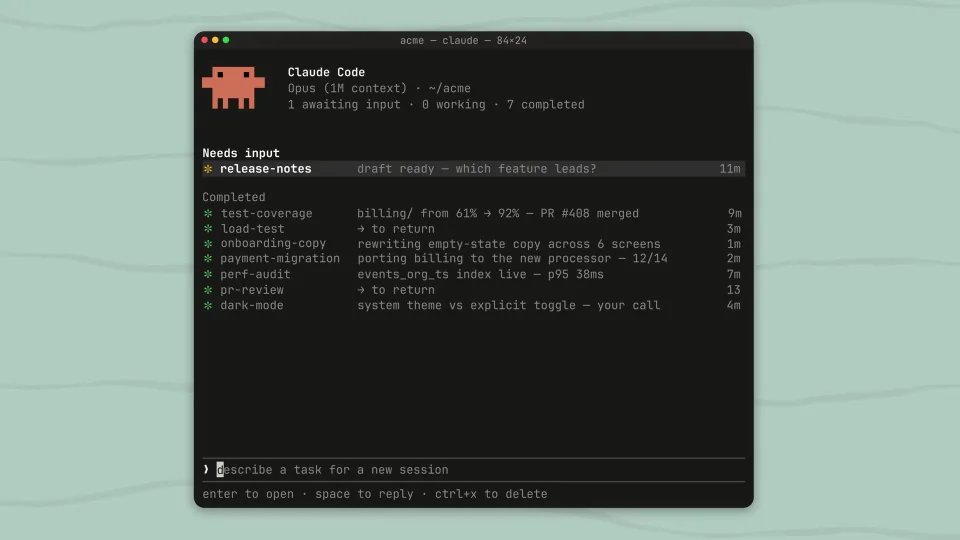

Anthropic / V245
Claude Code｜Agent View
用角色把散落的终端收拢成任务列表，让“管理多个代理”成为一个看得懂的动作。
构图与编排 可播放 · 可替换内容
整体编排规则示例
查看 HTML 源码
<!doctype html><html lang="zh-CN"><meta charset="utf-8"><meta name="viewport" content="width=device-width,initial-scale=1"><title>Claude Code｜Agent View · sequence</title><style>html,body{margin:0;width:100%;height:100%;overflow:hidden;background:#b5ccc3}canvas{display:block;width:100%;height:100%;object-fit:contain}</style><body data-mode="sequence"><canvas width="1000" height="600"></canvas><script src="data.js"></script><script src="common.js"></script><script src="scene.js"></script><script src="bridge.js"></script></body></html>画面元素终端窗口群像素角色套索路径聚合列表任务状态
MOTION LANGUAGE
动作与构图
局部动作 · 构图规则
01
散开的终端先形成问题
黑色终端分散在薄荷背景上，留出角色和套索的活动空间。角色用珊瑚像素色，套索用金色细线；任务文字保持等宽、短行。
02
套索牵动哪一个窗口，哪个窗口才移动
套索牵动哪一个窗口，哪个窗口才移动规则示例
查看 HTML 源码
<!doctype html><html lang="zh-CN"><meta charset="utf-8"><meta name="viewport" content="width=device-width,initial-scale=1"><title>Claude Code｜Agent View · sequence</title><style>html,body{margin:0;width:100%;height:100%;overflow:hidden;background:#b5ccc3}canvas{display:block;width:100%;height:100%;object-fit:contain}</style><body data-mode="clip" data-start="6" data-end="19"><canvas width="1000" height="600"></canvas><script src="data.js"></script><script src="common.js"></script><script src="scene.js"></script><script src="bridge.js"></script></body></html>绳线端点跟随窗口，窗口朝统一集合点收拢。角色先做牵引，窗口随后响应，聚拢后再切换成列表。
03
从状态分组进入具体任务
列表先按 Needs input、Working、Completed 建立顺序，再进入一条需要回复的任务。处理完回到列表，让局部操作保留全局位置。
04
替换任务与角色
可更换任务名称、角色造型和状态配色。保留散落、聚合、分组、处理这四种关系；列表文案变长时增高行距，不压缩状态标签。
SEQUENCE
段落与节奏
点击段落，定位到上方编排示意。






画面参考 · 离散静帧
KEEP THE RELATIONSHIPS
制作其他主题
- 保留散落→聚合→分组→局部处理的结构。
- 替换任务名与角色，套索连接目标必须对应被收拢窗口。
制作约束
终端窗口群 / 像素角色 / 套索路径 / 聚合列表 / 任务状态
- 角色牵引散落终端收拢，表达多任务进入同一视图。
- 聚合后按 Needs input、Working、Completed 分类，状态先于详情。
- 列表进入局部回复后返回全局，保持上下文。